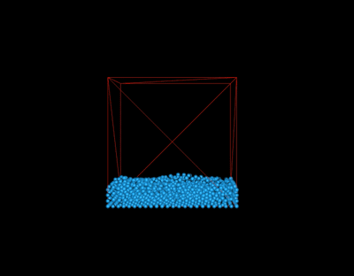
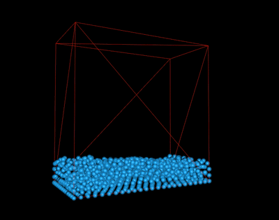
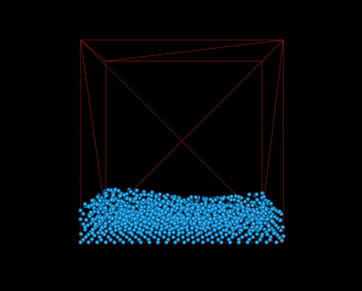

Abstract
Rendering and simulating fluid dynamics is a costly process that has been explored throughout the field of graphics. In this paper, we implement Position Based Fluids, treating fluids as a set of particles which interact and move at various velocities, determined by constraints such as incompressibility and vorticity. To render fluid simulations with a large number of particles in real-time, we also implement these methods in CUDA. We also attempt to perform surface reconstruction of these particles using Screen Space Fluid Rendering, which does not need to use any meshes. Finally, to bring another dimension to the render, we try to incorporate user interaction with the fluid via clicking and dragging.
Implementation
Module Overview
Our system consists of three components. The first, main component runs in a continuous loop to determine the new position for each particle at the next time step, based on constraints between its neighboring particles. The second component handles mouse and keyboard input to allow for interaction with the simulation. This includes two parts: a camera which allows a user to move within the scene and view the simulation through different perspectives, and an attempt to provide direct manipulation of the fluid such that the user can freely move particles within the scene. Finally, the last component is an (unsuccessful) attempt to reconstruct the fluid surface from its particles.
Fluid Dynamics
During each iteration, a sequence of constraints are applied to determine each particle's position for the next time step. We break this sequence up into three main sections.
1. for all particles i do
apply forces v_i ⇐ v_i +∆t(f_{ext})(x_i)
predict position x*_i ⇐ x_i +∆t(v_i)
end for
2. for all particles i do
find neighboring particles N_i(x*_i)
end for
3ab. while iter < solverIterations do
for all particles i do
calculate λ_i
end for
for all particles i do
calculate ∆p_i
perform boundary and response
end for
for all particles i do
update position x*_i ⇐ x*_i + ∆p_i
end for
end while
3c. for all particles i do
update velocity v_i ⇐ (1/∆t)(x*_i − x_i)
apply vorticity confinement and XSPH viscosity
update position x_i ⇐ x*_i
end for
1. Applying External Forces
The first step of each iteration is to apply any external forces and predict where the particle will move next according to its velocity. This velocity is informed by gravity and the forces acting upon the particle due to its constraints, such as vorticity and viscosity, from the previous iteration. The velocity is calculated using the one of the simple kinematics physics equations, where $t$ is a very small time delta:
This shows 1000 particles. The particles fall due to gravity and collide with each other, but do not exert forces on each other.
2. Finding Neighboring Particles
Before determining the forces acting upon each particle based on its new position, we must find its neighboring particles. To do this efficiently, we created a grid of our bounding box with a spacing of $h$, the cutoff distance for a particle's neighbor. $h$ is usually set as between [1, 2] times the average particle distance. Since we set the particle density to be 1000 particles per unit cube, our average distance between particles is $0.1$ units. We chose $h$ as $1.5$. This grid is represented by an array of bins, where each bin is essentially a class referencing an array of particles. Each particle is inserted into a bin according by $floor (\frac{\text{position}}{h})$. Now, neighbors can quickly be found in $O(N)$ time by finding the particle's corresponding bin, then checking if particles in the 27 adjacent bins (including the current bin itself) are less than a distance of $h$ away.
3. Calculate Particle Forces
Given the particle's position and its neighbors, we can determine the forces acting on the particle.
3a. Incompressibility
To be incompressible, a fluid must maintain a constant density. To do this, we must assure that the position of each particle at every iteration is such that the particle's density is as close to rest density as possible. First, we must find the current density of each particle, which is determined by the positions of the particle and its neighbors. This is done by using the SPH density estimator, where $W$ represents a kernel and $h$ is the cutoff distance for a particle's neighbors:3b. Tensile Instability
When a particle has too few neighbors, it may result in a negative pressure and cause particles to clump together. One solution, which adds the effect of surface tension, is to add an artificial pressure to the smoothing kernel in order to repulse particles. This corrective term is described by Monaghan, and is then added to our position update:3c. Vorticity Confinement
When using position based methods, an excess amount of energy may be lost and result in damping. For a given position, vorticity describes the tendency for the fluid to spin. If fluid at a point is spinning, the more likely it is to remain in that position, rather than moving with the flow. By confining this vorticity, we increase the likelihood of a particle to move from its position and generate more energy. This also allows for sharper changes in a particle's pressure, density, and velocity, thereby leading to more turbulence within the simulation. We confine vorticities by applying a corrective force. To do so, we first must estimate the particle's vorticity. This is done using the following equation: $$\omega_{i} = \sum_j v_{ij} \times \nabla{p_j} W (p_i - p_j, h)$$ Afterwards, we can calculate the corrective force:We use $c = 0.01$, as suggested by Müller et al.

This shows 1000 particles with no vorticity or viscosity. The particle movement is very dampened.

This shows 1000 particles with vorticity and viscosity. There is more movement in the fluid since we have added energy back into the system by introducing vorticity.
Final Result

Simulating 10,000 fluid particles.
Particle Appearance
While implementing fluid dynamics, we originally used simple, square red points to represent our particles. Since we could not implement surface reconstruction at the time, we decided to make the particles appear more particle-like by rendering them as point spheres. This only required making changes to the fragment shader. We first got the normal of the point from the texture coordinates and calculated the diffuse lighting, given an arbitrarily chosen light direction. We also added specular lighting to give the particle sphere an extra shine. At this point, we had many spherical particles, all of which were the same shade of blue. We added more depth to the scene by changing the color of each particle according to its velocity. Since water at greater velocities was more likely to be foam, we made particles at higher velocities whiter. However, we wanted to be able to do this in a systematic way. To do so, we got a fraction proportional to the magnitude of the particle's velocity:We wanted $1 - s$ to be equal to the particle's lightness. Thus, the smaller the velocity, the greater the $s$, and the darker the particle. To programatically change the particle's lightness, we converted the our base color blue from RGB to HSL space. We set $L$, the lightness, to $1 - s$, then converted it back to RGB space to be the new color of our particle.
CUDA
Fluid simulation, and particle simulation in general, maps very well to the type of workload that one would want to put onto the GPU. Since we can view fluid simulation as a series of stages and each stage only depends on information from the previous stage (that is, there is no synchronization necessary between particles within each stage), fluid simulation turns out to be embarrassingly parallel!
CUDA code runs on the GPU. A lot of the work to convert CPU code into GPU code lies in figuring out how to properly manage the GPU memory layout. However, at a high level, the processing flow is deceptively simple.
1. Copy input data from CPU memory to GPU memory. 2. Load the GPU code and execute it. (caching data as necessary) 3. Copy results from GPU memory back to CPU memory.
A Refresher
GPU parallelism occurs in two ways: parallel blocks and parallel threads. Each block can run multiple threads, and the GPU supports the launching of multiple blocks. Within each block, threads can share data through their shared on-chip memory, which acts like a cache for global GPU memory. To invoke a kernel function in parallel, one uses kernel_function <<< N blocks, N threads >>>. And within kernel function, each thread can access its respective object via: int index = threadIdx.x + blockIdx.x * THREADS_PER_BLOCK
One of the trickier things is to remember that host memory and device memory are completely separate entities. That means that any pointers in CPU memory which are copied to GPU memory will no longer be valid (cannot be dereferenced), and vice versa. This represents a problem for our datastructures, as each particle has a list of neighboring particles references, which, when copied, will no longer be valid pointers! More on this in the next section.
Converting CPU to GPU code
In our application, we replaced all of our fluid simulation code with the GPU kernel equivalents. Since we wrote the CPU code with converting to CUDA in mind, this was a rather simple process. As mentioned in the previous section, the challenge was in figuring out how to modify the particle data structure to support CUDA. Although there were several potential remedies, we chose a solution that resulted in the least amount of changes to the data structure itself since we wanted to rewrite as little of the CUDA kernels as possible.
class Particle {
public:
vec3 position;
vec3 pred_position;
vec3 delta_position;
vec3 velocity;
vec3 vorticity;
vec3 externalForce;
vec4 color;
Bin<Particle*> neighbors; // list of particle references
float lambda;
int id;
static const int size = 3;
};
class Particle {
public:
vec3 position;
vec3 pred_position;
vec3 delta_position;
vec3 velocity;
vec3 vorticity;
vec3 externalForce;
vec4 color;
Bin<int> neighbors; // The int represents the index
// of the neighbor in the particles array
float lambda;
int id;
static const int size = 3;
};
However, this meant that we still kept the Bin data structure! The Bin class is just a wrapper around an array of elements, represented by a pointer to a malloced memory location. As we've mentioned earlier, this pointer isn't a valid memory location in device code! Unfortunately, the naive solution of copying the particle over to the GPU and then modifying that particle's bin's elem address with a GPU memory location does not work. This is because, since the copied particle resides in GPU memory, we can't modify its fields!
templateclass Bin { public: T* elements; int size; int capacity; };
Particle* device_particles; // device pointer to array of particles cudaMemcpy(device_particles, particles, cudaMemcpyHostToDevice) // copy particles to device particles
Instead, we first need to create a temporary intermediary host pointer to a list of particles, where each particle's neighbors array points to a memory address in GPU memory! Then, we can proceed to cudaMemcpy this intermediary structure onto GPU memory. Why does this work? Well, the host pointer lives in CPU memory, so we can readily modify its members as usual. The tricky part is we are also allowed to have its members point to GPU memory, as long as we do not dereference in CPU code.
Particle* device_particles; // device pointer to array of particles
Particle* host_particles = (Particle *) malloc(sizeof(Particle) * NUM_PARTICLES); // host pointer to array of particles
for (int i=0; i<NUM_PARTICLES; i++) {
// copy particles from CPU to intermediary
host_particles[i].copy((*particles)[i]);
// set neighbor array to point to GPU memory
cudaMalloc(&(host_particles[i].neighbors.elements), sizeof(int) * (*particles)[i].neighbors.size));
// copy the neighbor indices over to the allocated GPU array
cudaMemcpy(host_particles[i].neighbors.elements, (*particles)[i].neighbors.elements, cudaMemcpyHostToDevice);
}
cudaMemcpy(device_particles, host_particles, cudaMemcpyHostToDevice) // copy particles to device particles
Benchmarks
As you can see, as the number of particles to render increases, the GPU accelerated fluid simulation performs much better than the sequential variant. Even so, it is surprising to see that speedup isn't an order of magnitude faster than the CPU variant. Let's profile the code to see what is taking so long.
From these results, we see that the majority of the time is spent calculating the fluid simulation, especially as we increase the number of particles. This is very likely due to not having taken advantage of the shared memory in each thread block. Although global memory isn't too slow when it comes to reads, it is terribly sub-optimal for writes. However, this is more of a prediction rather than fact, so, if we had more time, we would profile our kernel to see where the bottleneck is.
There is also an opportunity for future work in terms of minimizing the other costs, specifically GPU allocation and GPU deallocation time. CUDA's runtime library has OpenGL interoperability that we should take advantage of. At a high level, we can specifically bind the OpenGL buffers to GPU memory used by CUDA, and thus eliminate the overhead from constantly allocating and deallocating GPU memory as well as copying from the GPU to the CPU and vice versa. With these optimizations, it is very likely to achieve real-time rendering with over 100,000 particles, opening up entire new realms of user interactivity.
Interaction
Camera
We implemented a simple camera module to allow a user to view the simulation at different angles. To do so, we enabled OpenGL's mouse and keyboard callbacks, registering them to the corresponding functions. A user may pan around the scene using keyboard input (specifically, WASD for forward, left, backward, and right, respectively). They may also choose to rotate around the scene by right clicking and dragging toward the direction they wish to rotate. Finally, they may zoom in and out of the scene using mouse scrolling.|  |  |  |
|
|
|
|
Direct Manipulation
However, although the user can now move around the scene, it still lacks true interactivity. We hoped to allow the user to select particles in the scene and apply forces by right clicking and dragging with the mouse. At first, this problem appeared to be the inverse of the camera implementation. Given screen points from the mouse's position, we wanted to determine their coordinates in model space. First, given the x and y positions of the mouse, we transformed these into modelspace, which maps the positions from -1 to 1:| Mouse drag upwards, red particles indicate the particles which were actually selected. |

Surface Reconstruction
Surface reconstruction is a challenging problem. Up until now, we have modeled fluids as particles and implemented particle movement using fluid dynamics. Rendering the particles as a surface is an entirely new can of worms. Now that we have a set of particles, the challenge lies in generating a surface from the particles in a smooth way, creating a 2D surface from the 3D particles. Some methods, such as 3D Marching Cubes, generate triangle meshes along the iso-surfaces. However, these methods are computationally expensive and memory intensive.
A different way of rendering surfaces is described by Matthias Muller et al. in Screen Space Meshes. This paper presents a new method of creating a 2D triangle mesh and projecting it back into world space for a 3D mesh. First, for each grid in the 2D grid of the screen space, determine the depth of the frontmost particle from the camera to the grid node, and project the position of the particle into screen space. Smooth the depth values so that the depth map is less bumpy. Detech where there could be silhouettes based on the depth values, and smooth the silhouettes as well. Then, generate a mesh of triangles from the depths by generating vertices for depths that are non-infinite. Finally, project the triangle mesh back into world space and render the triangle mesh as usual in the standard graphics pipeline.
The paper, Screen Space Fluid Rendering with Curvature Flow, describes a splatting-based fluid rendering algorithm that calculates surface depth and thickness. This is the approach that is described in presentation at the Game Developers Conference by NVIDIA called Screen Space Fluid Rendering for Games. The benefit of this approach is that the method only generates the surface closest to the camera since the algorithm first calculates the surface depth of particles that have been rendered as spheres. Next, smooth the depths, so that we do not see a blobby, jelly-like surface. Van der Laan's paper describes a Curvature Flow method to smooth out surfaces in a way that is better than Gaussian blurs or Bilateral Gaussian filters. Gaussian blurs indiscriminately smooths things out, so particles may blend into something in the background. Thus, we want something that is smart enough to detect edges. Bilateral filtering preseves edges, but is more computationally expensive.
High-level algorithm
1. Generate depth of particles that are rendered as spheres. Write this to a buffer.
2. Smooth the depths by using Gaussian bilateral blur. This will reduce bumpiness for smoother surfaces.
3. Use surface normals to shade the surface as usual with Diffuse and Specular shading.
4. Add reflection.
5. Calculate thickness.
6. Use thickness to vary color by depth for transparent liquids.
Angela attempted to implement this surface reconstruction, but unfortunately, was not able to get the code to work. The challenging part of this was working with OpenGL shaders and debugging what was happening in the shaders. When the code was incorrect, the screen was blank, offering very few clues as to the root cause of the problem.
Lessons Learned
- Moving to a CUDA architecture does not guarantee a significant speedup. It often requires a considerable amount of time and tweaking in order to achieve proper memory management.
- CUDA's interoperability API with OpenGL exists, and alleviates the problem of having to copy memory back and forth between the CPU and GPU.
- Mapping from 2D to a 3D space is difficult! The easiest method is essentially a hack. Other methods require sending a ray through the scene, similar to the technique we learned in class for ray tracing.
- Parameters for fluid simulation require quite a bit of tuning, despite understanding the math behind the different constraints and properties. Sometimes the best you can do is reason through the problem you're having and keep changing parameters until it looks correct.
Math Appendix
A. Kernels
Kernel smoothing is a method to estimate a non-parametric function through a series of observations. Different kernels produce outputs with different properties. For fluid simulation, we use two kernels, suggested by Müller et al., for estimating density and calculating gradients. However, in general, other kernels may be used, as long as it is:- Even and normalized
- Zero at boundaries, to ensure stability
i. Poly6 Kernel
The poly6 kernel is designed by Müller et al. specifically for estimating particle density in SPH.ii. Spiky Kernel
The spiky kernel, created by Debrun is defined by:B. Gradient
The gradient is the slope of the tangent of a given function and points toward the greatest rate of increase for the function. It is essentially the derivative, except for higher-dimension functions. To calculate the gradient, partial derivatives are taken for each of the function's components. Thus, given a $n$ dimensional function, 3D in our case, the gradient is a vector of size $n$.C. Newton's Method
Newton's method is an iterative method to find a function's roots (solving for $f(x) = 0$). Thus, we use it in fluid simulation to optimize for the density constraint and determine a particle's optimal change in position. Newton's method begins with an initial guess for the root. It then makes the next guess based on the previous guess and the gradient of the function at that previous guess. The method continues iterating until a sufficient value is reached. For an n-dimensional function, Newton's update method is as follows:References
- Miles Macklin and Matthias Müller. Position based fluids. ACM Trans.Graph., 32(4):104:1–104:12, July 2013.
- Matthias Müller, David Charypar, and Markus Gross. Particle-based fluid simulation for interactive applications. In Proceedings of the 2003 ACM SIGGRAPH/Eurographics Symposium on Computer Animation, SCA ’03, pages 154–159, Aire-la-Ville, Switzerland, Switzerland, 2003. Eurographics Association
- Matthis Müller, Simon Schirm, and Stephan Duthaler. Screen Space Meshes. Eurographics/ ACM SIGGRAPH Symposium on Computer Animation (2007)
- Wladimir J. van der Laan, Simon Green, and Miguel Sainz. Screen Space Fluid Rendering with Curvature Flow. In Proc. I3D 2009: The 2009 ACM SIGGRAPH Symposium on Interactive 3D Graphics and Games, pages 91-98, 2009.
- Simon Green. Screen Space Fluid Rendering for Games. Game Developers Conference. San Francisco, CA, USA, 2010. NVidia.
Contributions
- James: fluid simulation logic, CUDA implementation
- Michelle: particle appearance, interaction (camera, attempted direct manipulation)
- Angela: attempted surface reconstruction